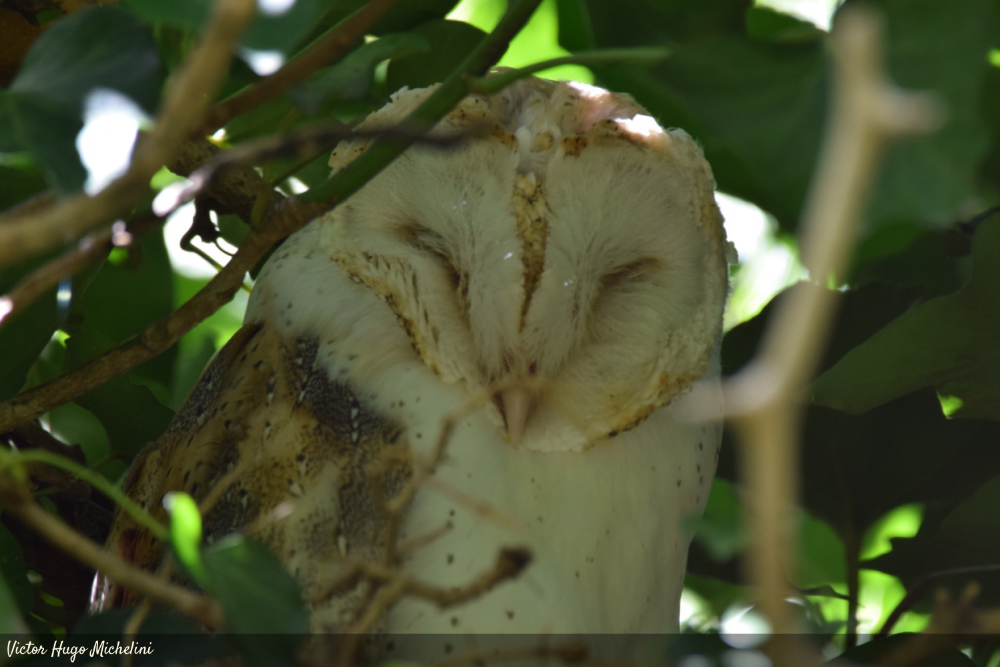

Los Titónidos
LOS TITÓNIDOS

Los titónidos (Tytonidae) son una de las dos familias de aves en que se divide el orden Strigiformes; la otra es Strigidae. Las especies de esta familia, que reciben el nombre genérico de lechuzas, son de tamaño mediano a grande
con la cabeza ancha en forma de corazón. Los titónidos incluyen dos sub-familias: Tytoninae y Phodilinae, ambas con un solo género cada una.
El registro fósil de la familia se remonta al Eoceno; dos subfamilias se conocen solo por sus restos, conocidas como Necrobyinae y Selenornithinae.
Los titónidos están muy extendidos; solo están ausentes del extremo norte de América del Norte, el Sahara y algunas áreas de Asia.
La mayoría de las 16 especies de titónidos ha sido poco estudiada y algunas, como Tyto soumagnei, apenas han sido avistadas desde su descubrimiento;
la lechuza común o de campanario (Tyto alba) es una de las especies mejor conocidas de lechuza.
5 especies de titónidos están amenazadas, y algunas especies insulares se han extinguido, como Tyto letocarti.
Las lechuzas son principalmente nocturnas y no migratorias; viven solas o en parejas.